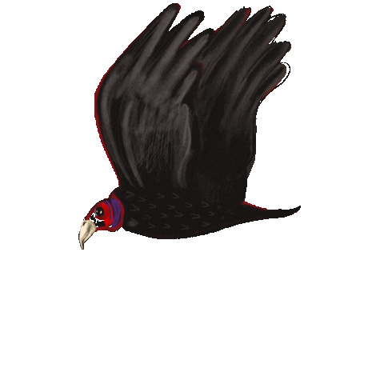
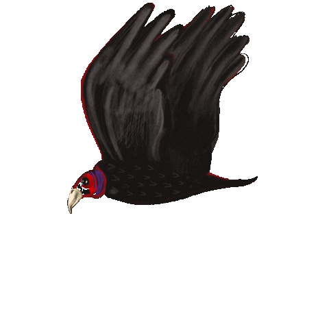

Zebras play a crucial role in the savanna ecosystem. As primary consumers, they primarily feed on grasses, shaping vegetation structure and nutrient cycling. They are also significant prey for carnivores, impacting predator populations and trophic interactions. Additionally, zebras contribute to nutrient cycling by consuming plant material and redistributing nutrients through grazing and browsing activities, ultimately affecting soil fertility and plant productivity in savannas.
Buffalo herds can cause notable ecological changes in the veld. As large grazers, they play a key role in transforming tall grasslands into shorter, grassy areas, creating conditions suitable for other animals that prefer to browse selectively.
These herbivorous insects are common in savannas and play a role in consuming vegetation.
These beetles feed on plant material such as leaves, stems, and fruits, making use of the abundant vegetation in the savanna.
Lions are the apex predators that primarily hunt large herbivores...
Solitary hunters known for their stealth and agility, preying on a variety of animals including antelopes, monkeys, and birds.
Opportunistic scavengers and hunters that feed on carrion as well as hunting in groups, targeting animals ranging from small mammals to large ungulates.
The Secretarybird in the savanna ecosystem primarily acts as a top predator, controlling populations of small mammals and reptiles, thus helping to maintain ecological balance.
Primarily act as scavengers, feeding on carrion and cleaning up carcasses. They help prevent the spread of disease by consuming dead animals and play a crucial role in maintaining the ecosystem's cleanliness and health.
Baboons contribute to seed dispersal by consuming various fruits and seeds and spreading them through their feces, fostering plant regeneration and enhancing savanna vegetation diversity. Their selective foraging behavior further influences plant structure and composition, shaping the distribution and abundance of plant species within their habitat.
Ostriches, as herbivorous birds, play a crucial role in the savanna ecosystem by controlling grass growth through their feeding habits. By primarily consuming grasses, seeds, and insects, they prevent vegetation from becoming overly dense, creating open areas that benefit other grazing animals.
Jackals, as opportunistic predators, contribute significantly to the savanna ecosystem's balance and health. By feeding on small mammals, birds, insects, and carrion, they act as scavengers, preventing the spread of disease and maintaining environmental hygiene.
Ostriches, as herbivorous birds, play a crucial role in the savanna ecosystem by controlling grass growth through their feeding habits. By primarily consuming grasses, seeds, and insects, they prevent vegetation from becoming overly dense, creating open areas that benefit other grazing animals.
Termites play a vital role in breaking down woody plant material, contributing to the decomposition process and soil fertility.
microorganisms in savanna ecosystems play essential roles in nutrient cycling, decomposition, soil fertility, plant health, and ecosystem resilience. Understanding the functions and interactions of these microorganisms is crucial for effective conservation and management of savanna habitats.